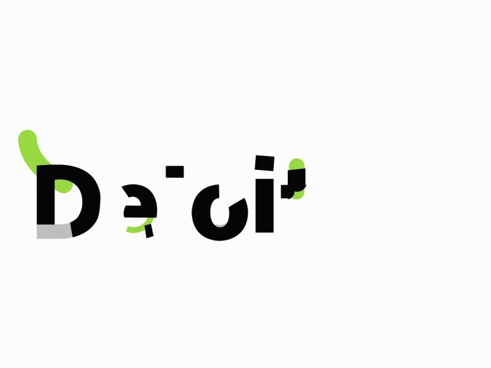

Cybersecurity Intern – Deloitte - New York, NY (June 2026 – August 2026)
- Enforcing separation of duties across Oracle Cloud by auditing security policies against least-privilege standards.
- Creating 337 procurement agents and mapping 450+ scripts across 48 personas to secure role-based permissions.
- Building comparison logic to detect anomalies across 20K+ role combinations, closing test coverage gaps.
About Me
Hi! I'm Keerat Rahman, a Computer Science student at Georgia Tech pursuing a combined BS+MS with a focus in security engineering. I'm currently interning at Deloitte, where I work on Oracle Cloud IAM and role provisioning — designing least-privilege access models and RBAC structures for enterprise clients. I'm passionate about the intersection of identity, security, and software engineering, and I enjoy building projects that put that knowledge into practice, like my machine learning system for detecting insider threats.
Education
-
BS in Computer Science, MS in Machine Learning
Georgia Institute of Technology, Atlanta, GA
June 2022 – May 2027
GPA: 3.9
Concentrations: Cybersecurity & Privacy, Artificial Intelligence
Relevant Coursework: Information Security, Reverse Malware Engineering, Enterprise Cyber Management, Data Structures & Algorithms

Work Experience

NPI Software Engineering Intern – Keysight Technologies - Santa Rosa, CA (May 2025 – November 2025)
- Automating parsing and integration of marketing and test data in C# by combining Word, Excel, and databases.
- Enhancing legacy codebase by creating linked, interactive UI and database for dynamic report generation.
- Delivering technical presentations to leadership at global symposium, using feedback to refine and drive project impact.
- Automating parsing and integration of marketing and test data in C# by combining Word, Excel, and databases.
- Enhancing legacy codebase by creating linked, interactive UI and database for dynamic report generation.
- Delivering technical presentations to leadership at global symposium, using feedback to refine and drive project impact.

R&D Software Engineering Co-op – Keysight Technologies - Santa Clara, CA (June 2024 – December 2024)
- Developing full-stack applications in C#, XAML, and C++ for fiber analysis, data analysis, and machine interfaces, with focuses on computer vision and multithreading.
- Building cleanroom software for fiber optics products to analyze and track beam quality and positioning.
- Creating firmware-supporting tools for phase measurement boards & optics, enhancing continuous integration.
- Developing full-stack applications in C#, XAML, and C++ for fiber analysis, data analysis, and machine interfaces, with focuses on computer vision and multithreading.
- Building cleanroom software for fiber optics products to analyze and track beam quality and positioning.
- Creating firmware-supporting tools for phase measurement boards & optics, enhancing continuous integration.
Machine Learning Engineer – Data-Driven Education (AI Sub-team) - Atlanta, GA (January 2024 – May 2025)
- Collaborating with registrar's office to implement an AI chatbot within the student registration portal.
- Working with team to integrate AI chatbot with MongoDB registration database for seamless data interaction.
- Transitioning locally-stored chatbot and registration database to the cloud, using Azure and Mongo DB Atlas.
- Collaborating with registrar's office to implement an AI chatbot within the student registration portal.
- Working with team to integrate AI chatbot with MongoDB registration database for seamless data interaction.
- Transitioning locally-stored chatbot and registration database to the cloud, using Azure and Mongo DB Atlas.

Projects
Insider Threat Anomaly Detection — August 2026
Python, pandas, scikit-learn, FastAPI, Docker, AWS EC2
Python, pandas, scikit-learn, FastAPI, Docker, AWS EC2
- Engineered behavioral features from 30M+ raw activity logs (CERT Insider Threat Dataset) using pandas.
- Trained and tuned an unsupervised Isolation Forest model, achieving a 3.03x anomaly detection lift on validated insiders.
- Built a FastAPI REST API to serve model predictions, containerized with Docker, and deployed to AWS EC2.
Splunk SOC Detection Project — August 2026
Splunk, Docker, SPL, MITRE ATT&CK
Splunk, Docker, SPL, MITRE ATT&CK
- Built 6 Splunk detections across Windows, Sysmon, network telemetry mapped to MITRE ATT&CK T1190/T1566/T1078.
- Detected SQL injection, Shellshock (CVE-2014-6271), and malicious macros in a 955K-event dataset.
- Fixed raw XML/Sysmon parsing gaps via spath and field extraction for structured telemetry analysis.
Security & Forensics Projects
-
Malware Analysis & Reverse Engineering Labs — May 2026
IDA Pro, x86 Assembly
- Performed static malware analysis in IDA Pro on viruses including Michelangelo, DOS7, SQL Slammer, and Harulf.
- Reverse-engineered assembly code to identify payload execution, triggers, and propagation mechanisms.
- Documented indicators of compromise (IOCs) and analyzed worm-based network attack behavior. -
Digital Forensics & Incident Response Investigation — December 2025
Autopsy, Ghidra, Steghide, Wireshark
- Analyzed disk images and system artifacts to reconstruct user activity and intent.
- Extracted and decrypted hidden evidence using password cracking, steganography, and packet analysis tools.
- Correlated forensic findings to document data exfiltration, malware preparation, and coordinated cyber activity. -
Cybersecurity Investigation Project – Breach Simulation — November 2025
Python, Wireshark, OpenSSL
- Analyzed network traffic with Wireshark and cracked passwords using John the Ripper to recover leaked credentials.
- Developed Python tools using OpenSSL and ssl for certificate authentication and DNS-over-TLS queries.
- Built a TOTP generator with HMAC-SHA1 to demonstrate secure authentication mechanisms. -
Web Security Project — October 2025
Python, MySQL
- Exploited SQL injection flaws to extract and modify database entries, bypassing multiple defense layers.
- Crafted and deployed XSS payloads to execute arbitrary JavaScript and steal session tokens.
- Designed CSRF attacks using forged requests to perform unauthorized user actions, bypassing token validation. -
Cryptography Project — September 2025
Python
- Exploited length-extension vulnerabilities in MD5/SHA hashes to forge API requests and bypass authentication.
- Generated MD5 collisions to create programs with identical digests but differing behavior to evade integrity checks.
- Implemented padding-oracle decryption and Bleichenbacher RSA forgery to decrypt ciphertexts and forge signatures. -
Application Security Project — September 2025
C, Python, x86
- Exploited buffer overflow vulnerabilities in C, reverse-engineering stacks to launch shellcode on ASLR systems.
- Built ROP chains to bypass DEP, enabling access to root directories in restricted execution environments.
- Created Python scripts and used GDB to analyze binaries, delivering exploits with shell and privilege escalation.
Machine Learning Projects
-
Scene Classification and Segmentation Project — November 2025
Python, PyTorch, scikit-learn, matplotlib
- Implemented CNNs in PyTorch for 15-class scene classification, achieving over 45% validation accuracy with custom architecture and optimizers.
- Built semantic segmentation model using ResNet-50 and PSPNet on CamVid dataset, reaching over 40% mIoU.
- Enhanced model generalization with data augmentation and dropout, reducing overfitting and improving accuracy by 7%.
Software & Systems Projects
-
Client-Server Chatroom Application — February 2025
Python
- Developed a multi-client chatroom in Python using TCP sockets, enabling live messaging over persistent links.
- Engineered a custom application-layer protocol with code authentication, broadcasting, and direct messaging.
- Implemented advanced command parsing with emoticons, dynamic timestamps, and safe client disconnection. -
Interactive Corporate Database — August 2023
MySQL
- Collaborated with the team to design and implement a multi-tiered relational database in MySQL.
- Constructed stored procedures for efficient extraction of qualitative and quantitative data.
- Developed a structured relational database, resulting in streamlined data management and enhanced usability. -
Dungeon Crawler Game App — December 2023
Jira, Android Studio
- Coordinated team of 5 using Agile methodology to design a video game app for Android devices.
- Project Manager: Coordinated project timeline, reviewed code, and provided oversight using Jira and GitHub.
- Produced user-friendly friendly game through backend development, and writing testcases. -
Lifspan Dagta Analytics Project — November 2023
RStudio
- Coordination with team to record randomly selected data relating to birth rates and death rates over time into a csv file.
- Utilizing RStudio to write R code, producing graphs and charts related to the data imported from the csv file.
- Worked with team to create a writeup through R-studio analyzing the relationships through R calculations and graphs. -
CPU Creation — April 2024
- Simulated a functional CPU with memory and interrupt capabilities using circuit software. -
LC-3 Assembly Text Editor — December 2023
- Built subroutines and a text editor using LC-3 Assembly and user stack for memory.
Skills
Languages
- Python
- C# / C
- Java
- SQL
- x86
- R
- XAML
- HTML
Software & Tools
- IDA Pro
- Oracle Cloud
- .NET / WinForms
- MySQL
- Docker
- Git
- Jira / BitBucket
Mathematics
- Calculus & Multivariable Calc
- Linear Algebra
- Probability & Statistics
- Discrete Math